On Sunday, 23 August 2026, MEDWELL CLUB hosted a Wellness Retreat at KIE Campus under the theme “How to Prioritize Self-Care in Medical Education.” The two-and-a-half-hour retreat brought together 16 medical students from the University of Rwanda and ASOME for an interactive space to pause, reconnect, reflect and explore practical approaches to wellbeing during medical training.
The programme combined physical activity, wellness games, personal reflection, peer discussion and an expert session led by Dr. Gaston Nyirigira, Senior Consultant Anesthesiologist and Pain Specialist at King Faisal Hospital Rwanda.
Dr. Nyirigira emphasized that self-care is not an optional lifestyle activity or something to consider only after graduation. It is an essential professional practice that should begin during medical school, particularly during demanding clinical training.
The retreat challenged the belief that commitment to medicine requires constant availability, exhaustion and the sacrifice of sleep, nutrition, relationships and personal interests. Participants were encouraged to distinguish healthy resilience from harmful overload and to recognize that their identities extend beyond medicine.
Healthcare providers cannot consistently give what they do not have. Caring for oneself is part of becoming capable of caring for others sustainably.
02
Background and Rationale
Medical education requires students to manage demanding academic workloads, clinical responsibilities, examinations and increasing expectations for professional performance. These pressures can make exhaustion appear normal and self-neglect appear synonymous with commitment.
Why This Matters
The wellbeing of healthcare workers directly affects patient safety, quality of care and workforce sustainability. WHO reports that at least one quarter of health and care workers experienced anxiety, depression or burnout between January 2020 and April 2022. During the COVID-19 pandemic, burnout affected an estimated 41–52% of health workers, with some analyses reporting rates as high as 66% among physicians and nurses.
Burnout and fatigue may contribute to medical errors, absenteeism, staff turnover and reduced patient satisfaction. These concerns are particularly urgent as WHO projects a global shortfall of approximately 11 million health workers by 2030.
In Rwanda, a 2025 policy brief reported that approximately 9% of health professionals leave the sector annually, citing heavy workloads, limited career advancement and other workforce pressures.
Africa faces an especially significant challenge. According to Africa CDC, the continent bears more than a quarter of the global disease burden while accounting for only about 3% of the global health workforce. In this context, burnout is not a badge of honor. It is a threat to patient safety, staff retention and the sustainability of healthcare systems.
MEDWELL CLUB organized the retreat to create a deliberate interruption to this culture and to help students explore practical approaches to physical, mental, emotional, spiritual and personal wellbeing.
03
Objectives
The retreat aimed to:
Create a safe and interactive space for medical students to pause and reconnect with themselves.
Increase awareness of the importance of self-care during medical education.
Encourage students to recognize early signs of stress, exhaustion and overload.
Promote practical daily wellness habits.
Challenge unhealthy beliefs surrounding productivity and professionalism.
Reinforce the importance of maintaining personal interests and relationships alongside medical training.
Strengthen peer connection and open discussion about student wellbeing.
Encourage students to approach future clinical responsibilities with greater balance and self-awareness.
04
Programme Overview
Time
Activity
Lead
8:30–8:40
Arrival and welcome
MEDWELL Club Team
8:40–8:50
One-word check-in
Shaka Pascale
8:50–9:05
Stretching and light group exercise
Elie Uwimaniduhaye
9:05–9:20
Wellness games and energizer
Shaka Pascale
9:20–9:35
Personal wellness check-in
Shaka Pascale
9:35–9:50
Interactive talk on self-care
MEDWELL Club Team / Shaka Pascale
9:50–10:35
Guest speaker session
Dr. Gaston Nyirigira
10:35–10:50
Small-group reflection and discussion
MEDWELL Club Team / Thierry Nsengiyumva
10:50–10:55
Personal self-care commitment
Shaka Pascale
10:55–11:00
Closing and group photo
MEDWELL Club Team / Medwell Studio
05
Highlights of the Retreat
5.1 Introduction to MEDWELL Club
The retreat opened with remarks from Bonheur Mwizerwa, MEDWELL Club Coordinator, who welcomed participants from the University of Rwanda and ASOME and introduced the broader MEDWELL Initiative.
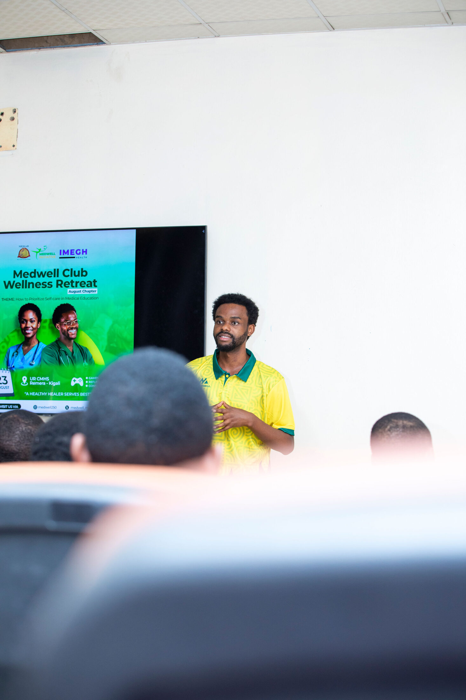
Bonheur Mwizerwa opening the retreat and introducing the MEDWELL Initiative.
He placed the retreat within the wider African healthcare context, noting:
“According to Africa CDC, Africa bears more than a quarter of the global disease burden while accounting for only about 3% of the global health workforce. In a system carrying this burden, burnout isn’t a badge of honor. It is associated with increased patient-safety risks and medical errors, reduced job satisfaction and poor retention.”
The introduction highlighted MEDWELL Club’s wellness-oriented activities, including sports initiatives, the Kira Medwell App and the MEDWELL podcast. It also clarified that MEDWELL Club seeks not only to organize activities, but to promote a culture in which medical students can remain healthy, connected and fully human while pursuing professional excellence.
A short video presenting evidence on healthcare-worker wellbeing and burnout further established the importance of the retreat.
5.2 Wellness Activities and Peer Connection
The programme intentionally moved beyond a conventional lecture format.
Participants began with stretching and light group exercise led by Elie Uwimaniduhaye. This helped create a relaxed atmosphere and encouraged participants to engage physically with the theme of wellbeing.
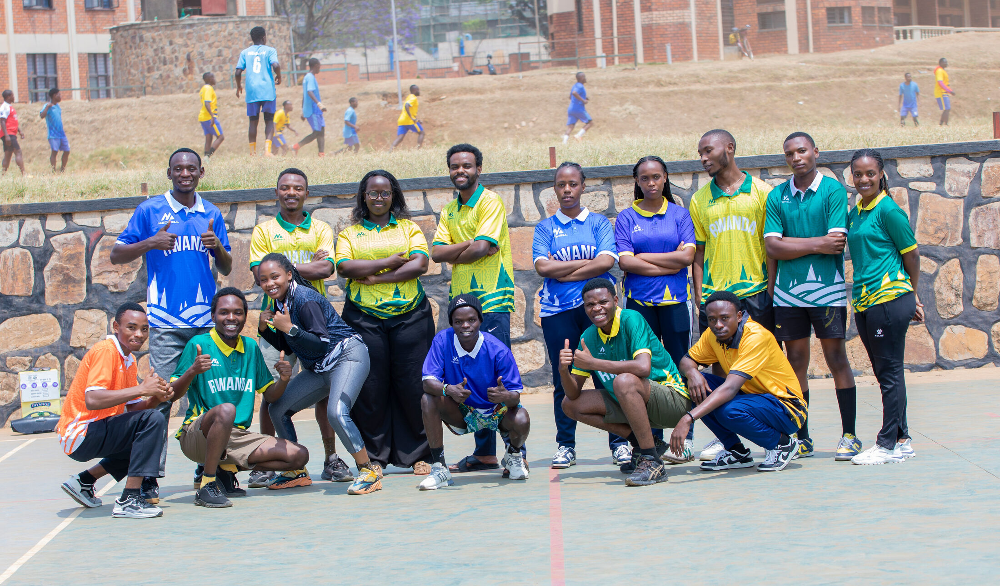
Participants after the opening movement session and group exercise.
Shaka Pascale then led wellness games and energizers, followed by a personal wellness check-in. These activities encouraged participants to reflect on their current physical, emotional and personal wellbeing.
Small-group discussions facilitated by the MEDWELL Club team, with active guidance from Thierry Nsengiyumva, MEDWELL Club Vice Coordinator, gave participants an opportunity to share experiences and discuss the challenges of balancing medical education with personal wellbeing.
The activities demonstrated that wellness can be experienced through movement, laughter, reflection and connection, not only discussed in formal presentations.
5.3 Key Insights from Dr. Gaston Nyirigira
The central educational session was led by Dr. Gaston Nyirigira, Senior Consultant Anesthesiologist and Pain Specialist at King Faisal Hospital Rwanda. His professional experience also includes medical education, patient safety and healthcare workforce wellbeing.
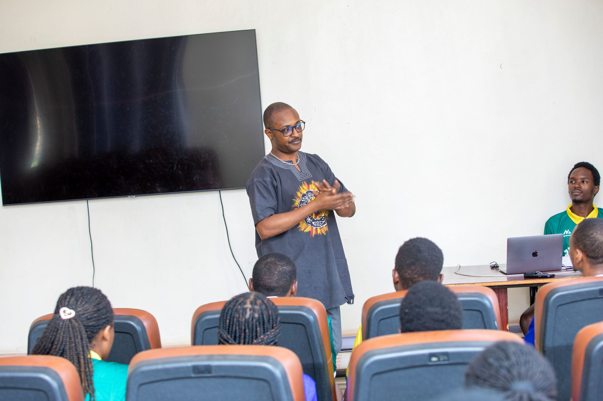
Dr. Gaston Nyirigira during the central expert session.
Dr. Nyirigira connected self-care directly to the responsibilities of healthcare professionals and emphasized several key ideas.
Self-care begins during medical school
Students were encouraged to develop sustainable habits before entering professional practice rather than waiting until burnout occurs. The session challenged the belief that the ideal medical student must always be available, complete every task regardless of exhaustion and sacrifice sleep, nutrition, relationships and personal interests to demonstrate commitment.
Participants were encouraged to ask not only “How much did I do?”, but also “At what cost?”
Resilience is not the same as overload
Dr. Nyirigira distinguished between developing the capacity to manage challenges and continuously exceeding one’s capacity without adequate recovery.
The session emphasized that recognizing limits and seeking balance does not indicate reduced commitment. Instead, healthier students are better positioned to perform their responsibilities effectively and sustainably.
The first 30 minutes of the day
Participants reflected on how they begin their mornings. Dr. Nyirigira encouraged them to consider whether they make time for hydration, prayer or spiritual reflection, movement, planning and intentional preparation for the day.
This practical discussion presented the beginning of the day as an opportunity to establish direction before external demands take over.
Medicine is part of identity, not the whole identity
Dr. Nyirigira also challenged the idea that medical students must abandon their interests outside medicine. Drawing from his own experience with music and his plans to establish a studio, he demonstrated that hobbies and personal passions can coexist with professional excellence.
Participants were encouraged to protect their relationships, talents, creativity, spirituality and interests as important sources of balance and resilience.
5.4 Reflection and Personal Commitments
The retreat concluded with small-group reflection and individual self-care commitments. Participants considered the habits they wanted to strengthen and the pressures they needed to manage more intentionally.
Closing group photograph · KIE Campus, 23 August 2026.
The closing message was that wellbeing should not depend solely on individual effort. Peers, student organizations, institutions and healthcare systems all have roles to play in creating supportive environments.
06
Key Lessons and Takeaways
1. Self-care is a professional responsibility.
Physical, mental, emotional and personal wellbeing support professional excellence.
2. Burnout should not be celebrated.
In a healthcare system carrying a significant disease burden with limited human resources, burnout threatens patient safety and workforce sustainability.
3. Self-care must begin early.
Students should develop sustainable habits during medical school, especially before and during clinical training.
4. Exhaustion is not proof of commitment.
Productivity should not come at the expense of sleep, nutrition, relationships and health.
5. Resilience has limits.
Healthy resilience includes recovery, self-awareness and the ability to recognize when support is needed.
6. Students are more than their medical training.
Music, sport, creativity, family, friendships, spirituality and other interests contribute to a balanced identity.
7. Wellness is collective.
Student wellbeing requires support from peers, institutions, organizations and healthcare systems.
07
Outcomes and Impact
The retreat provided 16 medical students from the University of Rwanda and ASOME with an opportunity to:
reflect openly on their current wellbeing;
identify unhealthy expectations within medical training;
understand the relationship between burnout, patient safety and workforce sustainability;
learn practical approaches to structuring their days;
distinguish healthy resilience from harmful overload;
reconnect with interests and identities beyond medicine;
engage with an experienced healthcare professional; and
develop personal commitments toward healthier habits.
The retreat exceeded initial expectations. Its combination of expert guidance, physical activity, games, peer discussion and reflection created a meaningful shared experience rather than a conventional wellness lecture.
08
Recommendations
Based on the retreat, MEDWELL CLUB recommends:
Organizing regular wellness sessions for medical students from the University of Rwanda, ASOME and other medical training institutions.
Integrating wellbeing discussions into medical education, particularly before and during clinical clerkships.
Developing peer-led activities that make conversations about stress and burnout more accessible.
Continuing to include physical activity and movement in student wellness programming.
Creating platforms for students to showcase talents in music, art, sport and other creative fields.
Providing practical resources on sleep, nutrition, time management, stress management and daily routines.
Continuing to engage experienced healthcare professionals who can share realistic perspectives on sustaining wellbeing throughout a medical career.
Introducing periodic wellness check-ins to help students identify when academic pressure is becoming unhealthy overload.
Advocating for institutional and system-level approaches to workforce wellbeing, recognizing that individual self-care cannot replace adequate staffing, supportive learning environments and healthy working conditions.
09
Conclusion
The MEDWELL Club Wellness Retreat demonstrated that conversations about medical student wellbeing can be practical, engaging and closely connected to students’ everyday experiences.
Through movement, games, reflection, peer discussion and expert insight, participants were encouraged to consider an important question:
What does it mean to become a good doctor without losing ourselves along the way?
Dr. Gaston Nyirigira emphasized that self-care is not a sign of weakness or reduced commitment. It is part of developing the capacity to serve others sustainably.
The retreat also reinforced that medicine should be part of a student’s identity, not the entirety of it. Students can pursue excellence in medicine while remaining musicians, athletes, artists, innovators, friends, family members and individuals with aspirations beyond the hospital.
The retreat leaves participants with a simple principle:
We can't pour from an empty cup. Healthcare Providers deserve care too.
The goal is not merely to survive medical school, but to become healthcare professionals who are knowledgeable, compassionate, resilient, healthy and able to bring their best selves to the people they serve.
10
Gallery
A visual record of the retreat, from morning movement and wellness games to reflection, discussion and the expert session.
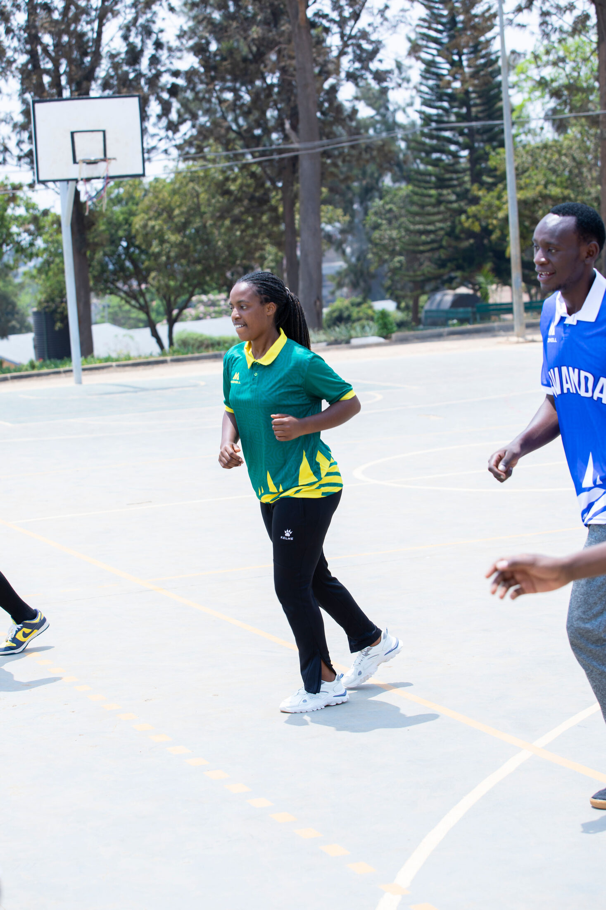
Movement and stretching · Elie leading the session
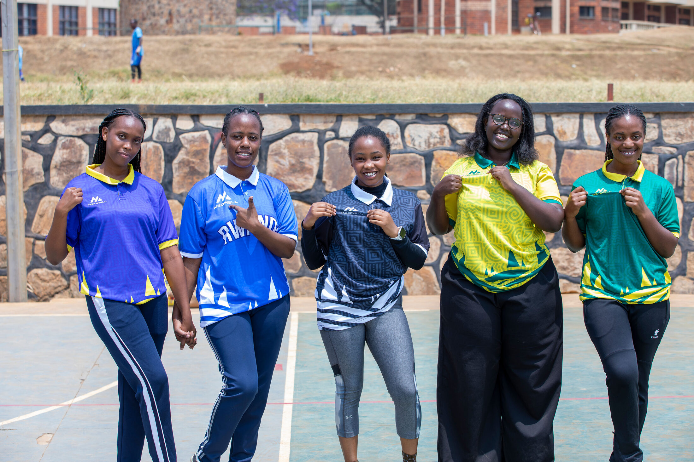
Participants · connection beyond the classroom
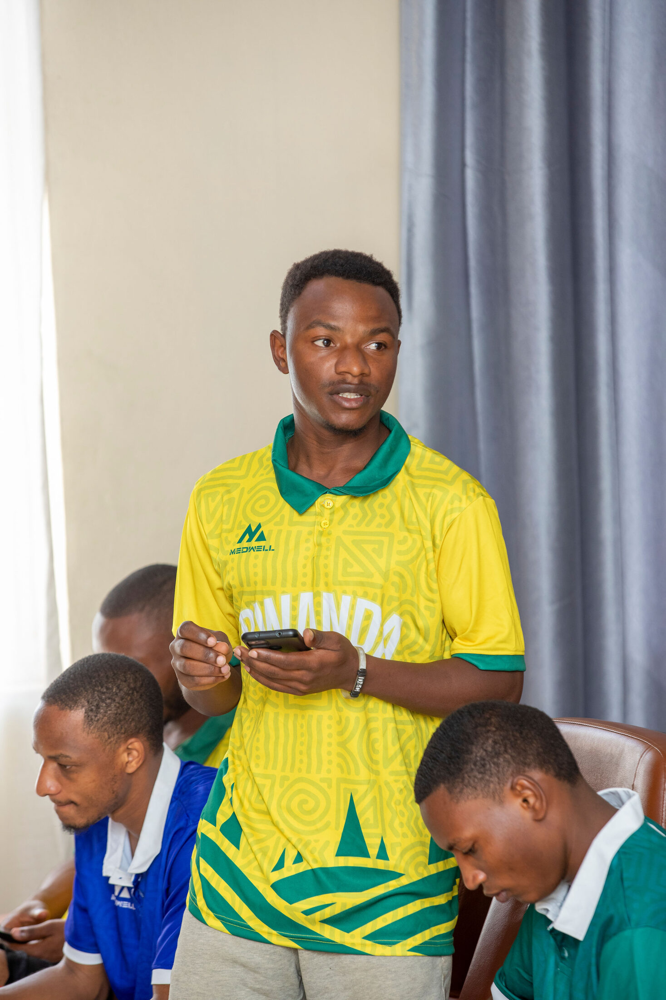
Participant moment · Jimmy
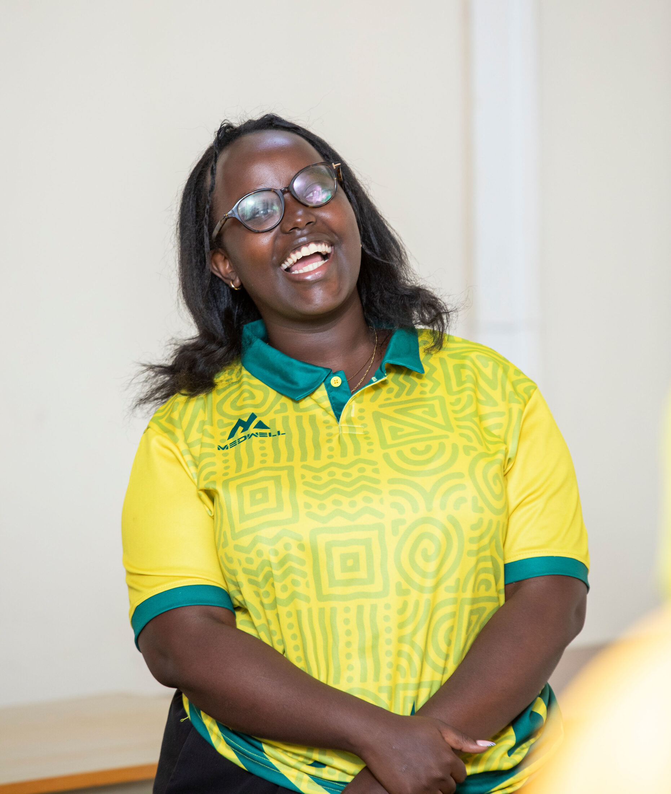
Wellness games · Pascale facilitating
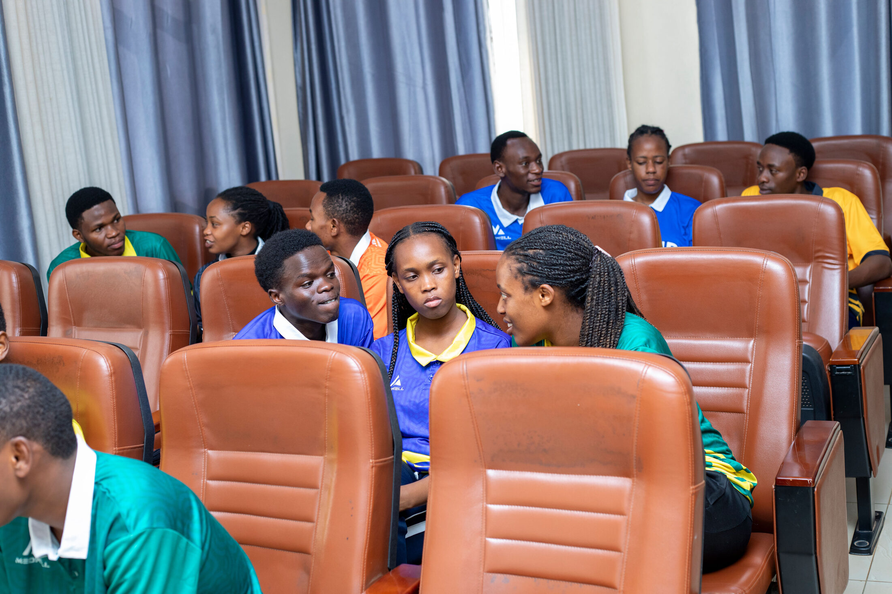
Shared reflection · interactive group discussion
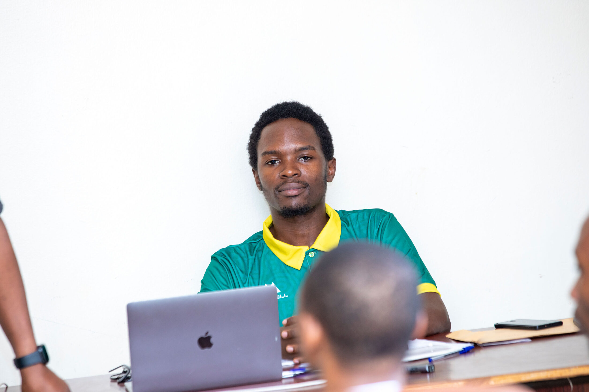
Peer exchange · questions and discussion
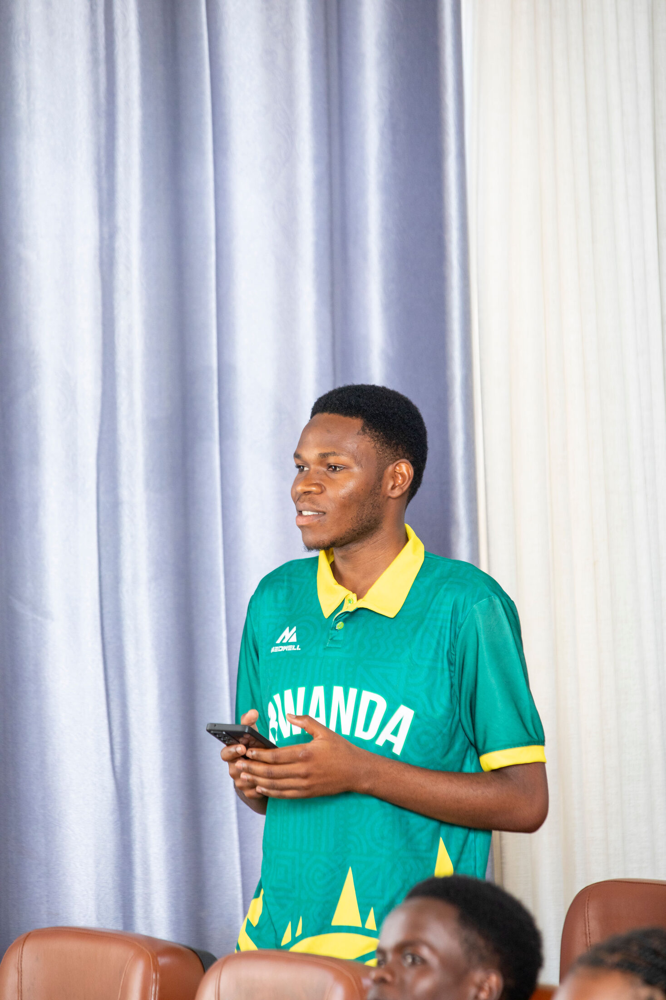
Participant moment · Gerishomu
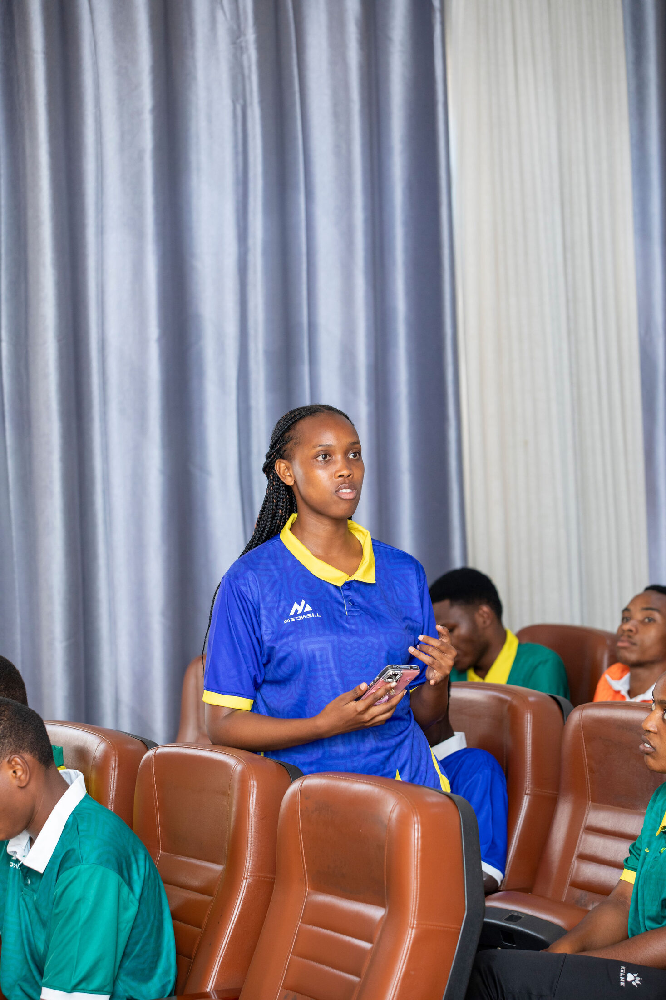
Participant moment · Gift
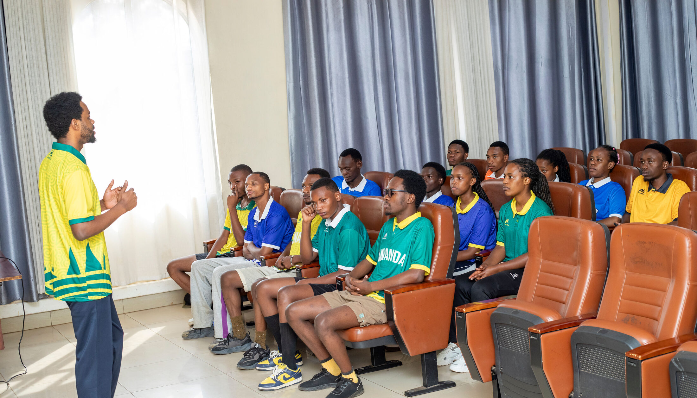
Conversation · Bonheur responding to questions
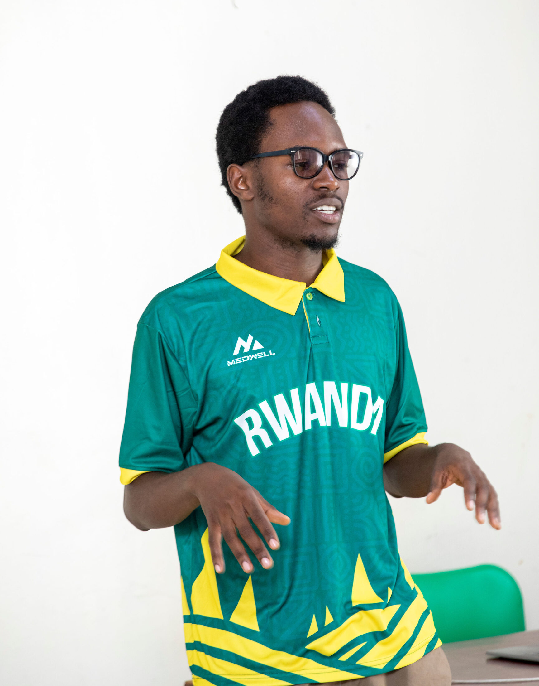
Facilitation · Thierry speaking
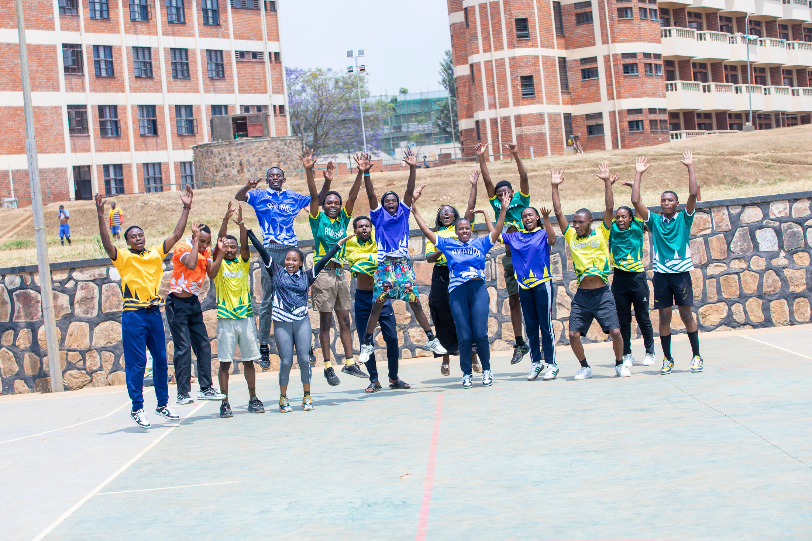
After movement · group reflection
11
Acknowledgements
MEDWELL CLUB sincerely appreciates everyone who contributed to the success of the Wellness Retreat.
Dr. Eugene Tuyishimire
Founder of IMEGH and the MEDWELL Initiative
For funding the retreat and making it possible for MEDWELL CLUB to create a meaningful space for medical students to reflect, connect and learn about sustainable wellbeing.
Dr. Gaston Nyirigira
Senior Consultant Anesthesiologist and Pain Specialist, King Faisal Hospital Rwanda
For sharing his experience and providing practical, engaging insights into sustainable professional wellbeing.
Bonheur Mwizerwa
MEDWELL Club Coordinator
For welcoming participants, introducing the MEDWELL Initiative and establishing the context for the retreat.
Thierry Nsengiyumva
MEDWELL Club Vice Coordinator
For facilitating group discussions and participant reflection.
Shaka Pascale
University of Rwanda Medical Student
For leading the check-in, wellness games, energizers, interactive self-care discussion and personal commitment activity.
Elie Uwimaniduhaye
MEDWELL Club Leadership Team
For leading the stretching and physical exercise session.
Medwell Studio Camera Team: for documenting the retreat and preserving the memories of the day.
MEDWELL CLUB also thanks the 16 medical students from the University of Rwanda and ASOME who participated openly and enthusiastically and contributed to an atmosphere of reflection, connection and shared learning.
12
Event at a Glance
Theme
How to Prioritize Self-Care in Medical Education
Date
23 August 2026
Duration
2 hours and 30 minutes
Venue
KIE Campus
Participants
16 medical students from the University of Rwanda and ASOME
Format
Indoor and outdoor
Core approach
Movement, reflection, education, peer connection and practical self-care
Central Message
We can't pour from an empty cup. Healthcare Providers deserve care too.
Official Chapter Report
Read the report online or download the same formal Chapter Report as a PDF.
There's a place in MEDWELL Club at every stage of the journey, as a student, a practicing professional, or simply someone who believes healthcare providers deserve care too.